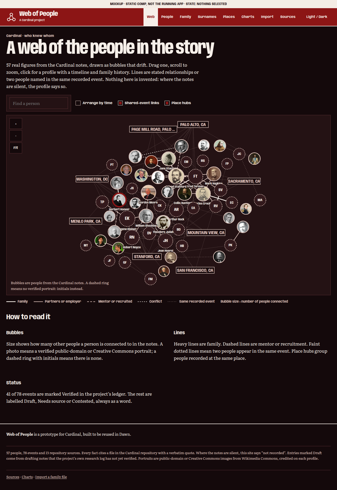
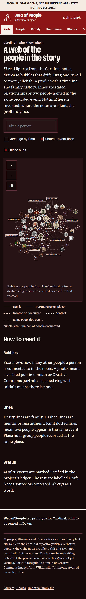
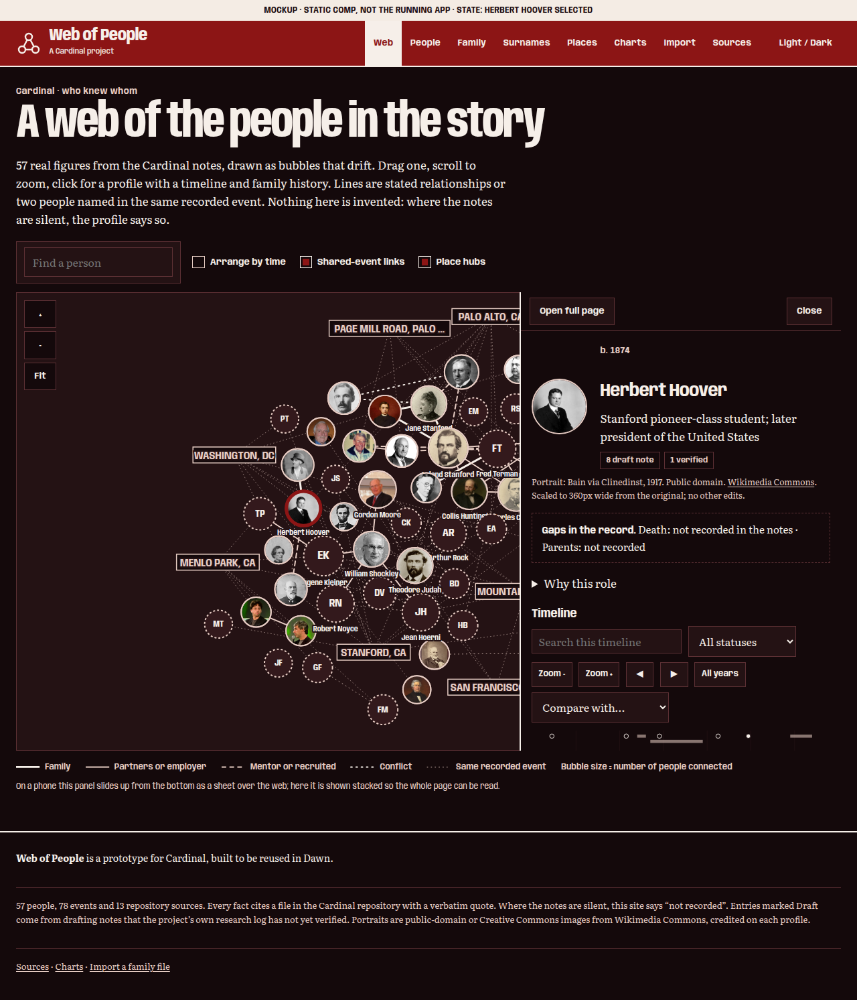
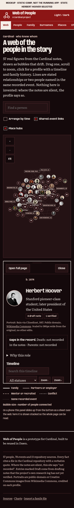
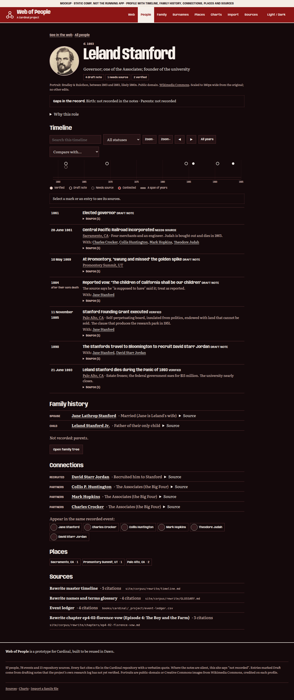
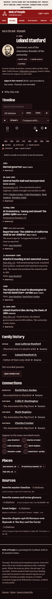
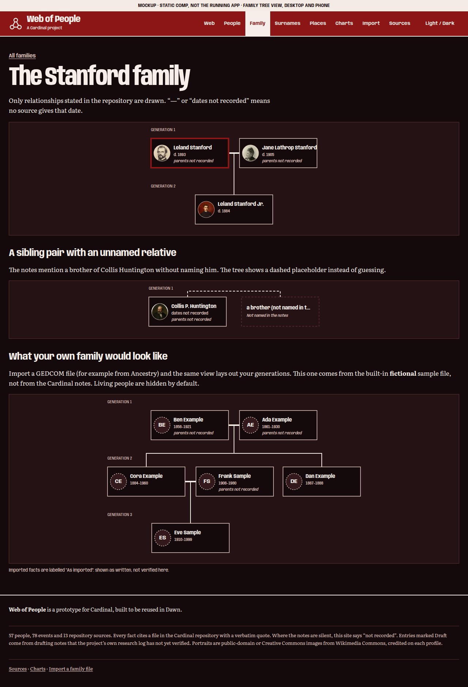
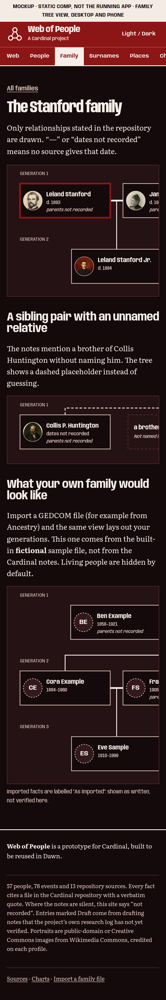
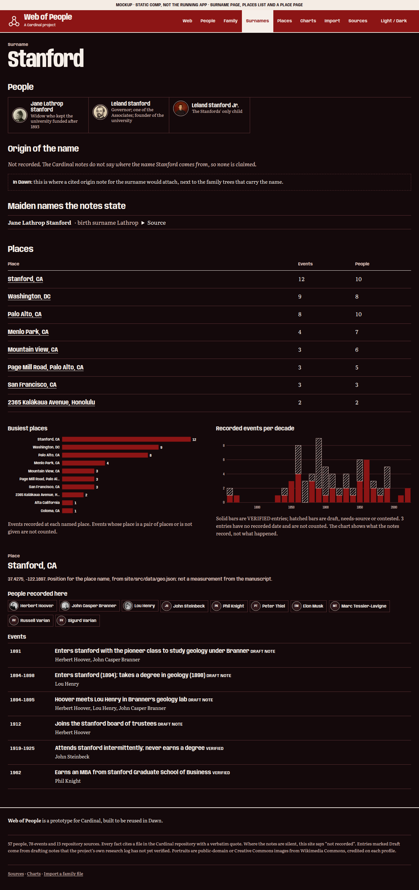
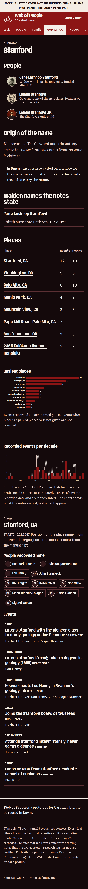

Web view
Bubbles with photo or initials, links, place hubs, search and toggles. Nothing selected. Open the page


Static comps · before the build
Five pages, full length from header to footer, each shown at desktop (1280 px) and phone (390 px) width. They use the real stylesheet and the real cited data, but they are frozen: open any page to see it live in your browser at any width. Images are exported by npm run mockups.
Bubbles with photo or initials, links, place hubs, search and toggles. Nothing selected. Open the page


A click opens the profile beside the web (a bottom sheet on a phone). Open the page


Timeline axis and list with status words, family history, connections, places, sources. Open the page


Stated families only, a dashed placeholder for an unnamed relative, and a sample import. Open the page


Surname page with “origin: not recorded”, places table, charts, and a place page. Open the page

